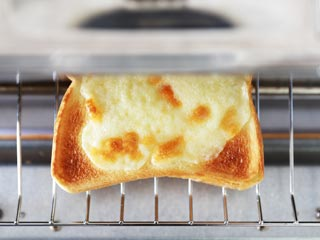
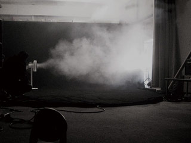

카테고리 네비
본문 내용
Stories
발뮤다 제품을 만들기 위한 집념-

- 숲 속 작은집, 추억의 치즈 감자칩
- 추억의 맛. 어릴적 어머니가 자주 만들어 주셨던 치즈 감자칩을 소개합니다.
-

- 맛있는 음식을 함께 나누다
- 맛있다는 경험은 누군가와 나누는 것으로, 한층 더 깊어집니다.
-

- 인생 최고의 크루와상
- BALMUDA The Toaster 크루아상 모드에 얽힌 이야기.
-

- 치즈토스트에 담긴 마음
- 발뮤다만의 특별한 치즈 토스트 모드가 개발되기까지의 이야기.
-

- 한여름의 아침식사
- BALMUDA The Toaster로 만든 든든한 아침식사를 소개합니다.
-

- 와타 사토시×테라오 겐 대담
- 일본에서 만든 제품 : Made in Japan에 담은 생각
-

- 와타 사토시×테라오 겐 대담
- GreenFan S를 전하고 싶다 : 마음을 전하기 위한 커뮤니케이션
-

- 와타 사토시×테라오 겐 대담
- 형태가 아닌 사고 방식 : 중요한 것은 무게, 질감, 원시적인 요소
-

- 와타 사토시×테라오 겐 대담
- 와다 사토시 x 발뮤다 : 자동차 디자이너 와다 사토시가 발뮤다와 함께하기까지
-

- 발뮤다 이야기
- 제품을 통한 좋은 경험을 Hello Kitchen:「GreenFan S」 발표 후 테라오 겐과 발뮤다팀은 지금까지 「...
-
- 발뮤다 이야기
- 크리에이티브 지원팀:「필요한 도구」에 대해 생각한 결과 만들어진 「GreenFan」 이후로도 발뮤다는 「기분 좋은 시...
-

- 발뮤다 이야기
- 「GreenFan」의 개발 배경:발뮤다 창업 이래 지속해 온 이념을 리먼 사태를 겪으며 돌이켜 생각하게 되었습니다. ...